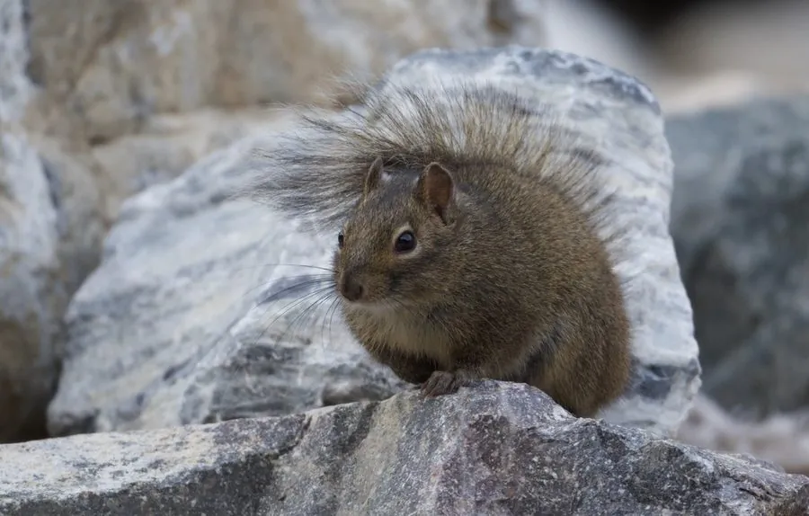

哺乳动物 · 动物界
岩松鼠 Sciurotamias davidianus

中国北方山地常见的松鼠科动物，毛色灰褐、尾毛蓬松而不卷，栖于岩缝与梯田石堰，秋季大量搬运坚果储藏过冬。
- 分类
- 门脊索动物门纲哺乳纲目啮齿目科松鼠科属岩松鼠属
- 栖息环境
- 山地岩石沟谷、石堰梯田、灌丛与林缘
- 地理分布
- 中国河北、北京、山西、陕西、甘肃、宁夏、四川北部等地
- 保护级别
- IUCN 无危（LC）；中国境内属受保护野生动物
物种志
岩松鼠体形中等，成年体长 20–25 厘米，尾长 12–16 厘米，体重 200–350 克。毛被粗糙，背毛灰褐至黄褐色，毛尖带黑色，腹面浅灰或污白，眼周有一圈浅色毛，耳壳小而圆，不似树松鼠那样长出长毛簇；尾毛蓬松但不像其他松鼠那样向背上卷曲，故有“扫尾子”之称。
它们是中国北方的特有种，分布于华北、西北的山地与丘陵，栖息于岩石裸露的沟谷、石堰、梯田边缘和灌丛，常在岩缝、石堆下筑巢，也在土坡挖洞。白天活动，以坚果、种子、浆果和农作物为食，秋季会把核桃、橡子等坚果搬到石缝中分散储藏，供冬季取食。它们多在岩面与地面活动，攀爬能力不及树松鼠，遇险时迅速钻入石缝并发出短促尖叫。每年繁殖 1–2 胎，孕期约 30 天，每胎 3–6 仔。因取食农林果实，在部分地区被视为害兽。
形态与习性
- 体长约 20–25 cm，尾长 12–16 cm
- 体重约 200–350 g
- 食性坚果、种子、浆果、嫩芽与农作物
- 繁殖每年 1–2 胎，孕期约 30 天，每胎 3–6 仔
- 储食行为秋季把核桃、橡子分散藏进石缝，冬季取食
- 活动节律昼行性，晨昏最活跃，冬季仍外出
- 寿命野外约 3–5 年，饲养下可达 8 年
趣味知识
- 岩松鼠的尾巴蓬松却不上卷，跑动时像拖着一把小扫帚。
- 它把核桃一颗颗塞进石缝储藏，来年常忘记取用，客观上帮树木播种。
- 岩松鼠不善爬树，遇到危险时第一反应是钻回岩缝而不是上树。